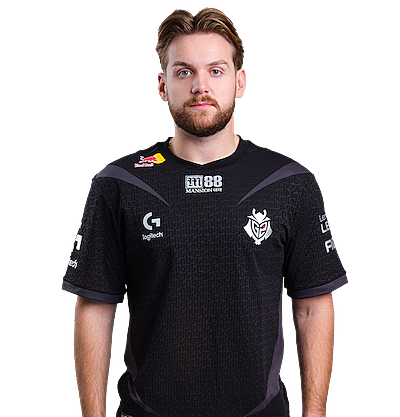

Никола Ковач (босн. Nikola Kovač, род. 16 февраля 1997, Брчко) — боснийский киберспортсмен по Counter-Strike 2, более известный под ником «NiKo».
Никола впервые получил известность в Европе после подписания контракта с организацией «iNation». Уровень игры Ковача вызвал интерес со стороны mousesports, в которую он перешёл в марте 2015 года.
В феврале 2017 года Никола перешёл в FaZe Clan. Первая крупная победу одержал на турнире StarLadder StarSeries Season 3, после чего последовал период без побед в течение пяти месяцев, в результате чего команда с трудом попала на Esports Championship Series Season 3. После изменения состава FaZe, в который вошли два лучших игрока мира 2015 года — Олоф «olofmeister» Кайбер Густаффсон и Ладислав «GuardiaN» Ковач, команда одержала победы на ESL One: New York 2017 и ELEAGUE CS:GO Premier 2017. После этого последовало два месяца без побед, прежде чем удалось завоевать трофей Esports Championship Series Season 4 в конце года. После поражения в финале на ELEAGUE Major: Boston 2018, вновь последовала череда неудач, на этот раз в составе с Ричардом «Xizt» Ландстрёмом вместо «olofmeister», пока им не удалось забрать домой Intel Extreme Masters XIII, а вскоре после этого, в начале лета — трофеи ESL One: Belo Horizonte 2018 с Йоргеном «Cromen» Робертсеном в качестве замены. В октябре 2018 года FaZe заняли первое место на турнире EPICENTER 2018 в Москве, что стало его седьмой победой в матчах за первое место в главных турнирах с FaZe Clan. В конце 2019 года, количество трофеев выросло до десяти, поскольку FaZe выиграла BLAST Pro Series Copenhagen. 2020 год ознаменовал ещё одну победу для FaZe — они выиграли европейский дивизион IEM New York 2020 Online, одержав победу над OG Esports.
28 октября 2020 года, после трёх с половиной лет сотрудничества с FaZe Clan, Ковач был приобретен организацией G2 Esports. Никола Ковач с новой командой много раз выводил G2 Esports в финал различных турниров, в том числе и PGL Major Stockholm 2021 в котором они проиграли команде Natus Vincere.
